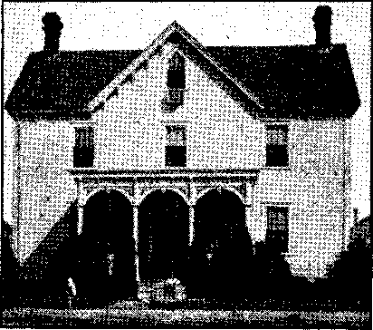
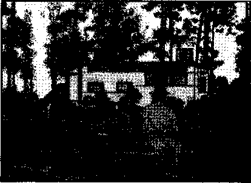
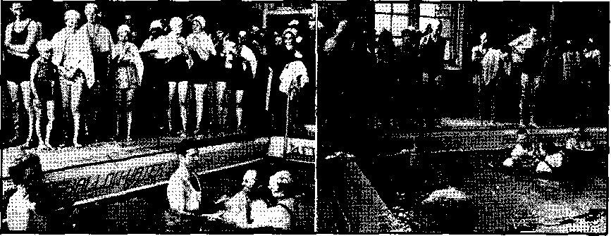

Roman Catholic Hierarchy and Axis Collaboration
“Protests” by Catholic Dignitaries
Freedom of Speech Only for Hierarchy
4 Persecution of Catholics in Germany
‘Come, Let Us Reason Together’ ' ;
Jehovah’s witnesses—Ordained Ministers
Another Police Force at Reedley
“Thy Word Is Truth”
Conquest Aided by Seduction of Schools 24
Presenting “This Gospel of the Kingdom” Paragraph Construction
Published every other Wednesday by WATCHTOWER BIBLE AND TRACT SOCIETY, INC.
117 Adams St., Brooklyn, N, Y,r U. S. A, Editor Clayton J. Woodworth
Business Manager Nathan H. Knorr
Five Cents a Copy
|1 a year in the United States $1.25 to Canada and all other countries
NOTICE TO SUBSCRIBERS
Remittance®! For your own safety, remit by postal or express money order. When coin or currency is lost in the ordinary mails, there 1b no redress. Remittances from countries other than those named below may be made to the Brooklyn office, but only by International postal money order..
Receipt of a new or renewal subscription will be acknowledged only when requested. Notice of Expiration is sent with the Journal ono month before subscription expires. Please renew promptly to avoid loss of copies. Send change of address direct to us rather than to the post office. Your request should reach us at least two weeks before the data of issue with which it is to take effect. Send your old as well as the new address. Copies will not be forwarded by the post office to your new address unless extra postage is provided by you. * Published also in Greek, Portuguese, Spanish, and Ukrainian.
OFFICES FOR OTHER COUNTRIES
England 34 Craven Terrace, London, W.2
Australia 7 Beresford Road, Sirathfield, N S W. South Africa 623 Boston House, Cape Town
Mexico Calzada de Melchor Ocampo 71. Mexico, D.F. Brazil Caixa Postal 133 9, Rio $e Janeiro
Argentina CaHe Honduras 5646-43, Bueflos Aires Entered as second-class matter at Brooklyn, N. Y.> under the Act of March 3. 1879.
The Totalitarian Monstrosity Rebuked j ♦ To me it is a monstrous thing that ! in any American community the right of children to public school education should be made dependent upon such a thing as a salute to the flag. That right is theirs by reason of citizenship. “The country and its institutions exist for the people, not the people for the institu-'tions." That the people exist for the state is a totalitarian notion.
The flag salute was injected into the schools by busybodies and its adoption seems to have coincided with the decadence of the teaching of American history, a decadence which has been the subject of recent editorials in the HeraldNews. As the New York Times has said in its long campaign against encroachments in Central Park, that if every structure which busybodies had wished to erect there had been built there would be no park; so with the public schools, if all the notions of busybodies were injected into them there would be no education.
If Jehovah’s witnesses refused to salute the flag in order to show defiance of the nation’s Constitution and laws and in support of some foreign power there might be some reason for all the judicial fuss. But they do not; theirs is a religious attitude.
Freedom, including religious freedom, is so precious, and should be so close to the heart of every American, that we should rather lean over backward to sustain it than to have it encroached upon in the slightest degree. Rather than have one child driven from the public schools for declining to salute the flag in contravention of his conscience I would prefer to take that compulsory ritual out of the schools. After all, America got along very well without it for a century and a half.—Russell Palmer, in the Passaic (N. J.) Herald-News.
“And in His name shall the nations hope.”—Matthew 12:21, A.R.V.
Volume XXIV
Brooklyn, N. Y., Wednesday, February 17, 1943
Number 611
Roman Catholic Hierarchy and Axis Collaboration
THE Roman Catholic Church blesses the arms" of the dictators, and gives thanks for their victories. She goes even farther. She takes her position in the ranks of the totalitarian forces as an integral part of the war machine. Her job is to prepare the way by manning the fifth-column activities, and her priests then consolidate the gains in the wake of the conquering Fascist legions and prevent uprisings of the Catholic occupied countries. Since their organization the Jesuits have been foremost in the fifth-column infdtrations and backstabbings. The Jesuits have, because of these seditious traits, been run out of many countries, only7 to return later and repeat the performance. Instead of their becoming dizzy by this “revolving door” existence, the practice has only resulted in a closer approach to perfection in the nefarious work of their father the Devil.
The Hierarchy’s hand in this respect was exposed more in Spain than anywhere else. Throughout the recent civil war there this was obvious and the pope’s blessing of Franco, the “Christian gentleman”, would of necessity include his two cat’s-paws, Hitler and Mussolini, used to rake the papal chestnuts from the Spanish fire. Now the pope is further embarrassed by the dead giveaway7 of his Fascist connections by Franco’s plans, recently publicized in the press, for a Catholic axis against the democracies, consisting of Vichy France, Spain, and Portugal.
The Spanish Falange is a notoriously Fascist organization; it is also Catholic. The bishop of Madrid is the director of the youth front of the Falange. Speaking to the leaders of this youth front the bishop, “Reverend” Leopoldo Eijo y Garay7, said: “Falange would not have raised you to the dignity of instructors of Spanish youth unless you were found to be good Catholics; and you would not be good Catholics if you ignored the saving social. doctrines of the church.” The bishop quoted the founder of the Falange as follows: “Man must be free, but liberty exists only7 within a determined order.” Incidentally, this is similar to the sophistry7 of the majority7 opinion of the United States Supreme Court, rendered on June 8, 1942, against Jehovah’s witnesses, that ‘the mind of man remains forever free, but he must have a license to preach the gospel’.
The dictator of Spain had two diplomatic receptions at New7 Year’s. To avoid embarrassment he had the friends of the Axis at one of them and the friends of the United Nations at the other. The representatives of Eire and of the Vatican w7erc at the Axis reception. Six weeks later the Vatican telegraphed the abbot of the Benedictine monastery at Montserrat to bless the Butcher; which he did.
Perhaps the reader would like to view the fifth column work nearer home.
At a meeting of the governors of the Pacific coast states of Mexico held at Mazatlan, Governor Gonzalez, of Jalisco, stated that the clergy in his state was carrying on a ridiculous. campaign against Mexican efforts to organize
national defense, telling the people “they should be on the side of Germany and Japan because those countries represent the religious interest of the world”. When' Mexico’s archbishop, Luis M. Martinez, denied the charges, the Jalisco legislature, the local branches of the Mexican Confederation of Workers, the ^League of Agrarian and Peasant Syndicates, and the Federation of Leagues of the People’s Sector supported the governor’s charges, declaring that “the activities of the National Synarchist union and National Action unquestionably follow the tactics pointed out for them by ecclesiastical authorities”.
The Los Angeles Times, November 9, 1941, contained a story stating that the Synarchists (elsewhere described as “Mexico’s gold-shirted legions”) are “ardent Catholics”, “claim 500,000 members and few deny their claim” and that “the power potentially commanded by the Sinarquistas [Synarchists] is formidable when one realizes the Mexican army numbers only 61,500 men”. And the Synarchists demand “restoration of full liberty for the Catholic Church”.
It was found necessary to outlaw a Catholic weekly in Costa Rica because of its love of Nazism and the “new order”.
The president has ordered the suspension of the pro-Nazi Catholic weekly Epoca under the extraordinary powers granted to him by Congress. The action, based upon the fact he considered the weekly an organ of the Nazis, Fascists and Falangists, meets with the general approval of the public and press. —New York Timex, March 9, 1942.
Only the most expert of liars could be backing Hitler and Hirohito tooth and nail to gain world domination, and at the same thne pretend to the democracies that he is wholly on the side of .freedom. The conference of the republics.at Rio de Janeiro was prevented from gaining the end it had in view because Chile and Argentina, under control of the Vatican, refused to go along. Anticipating that some might suspect him of being at the bottom of their balky conduct the pope sent out a feeler, through his secretary of state and his delegate at Washington, denying that he had done anything to torpedo the conference. The joke is that nobody accused him of it. He denies everything as a matter of routine policy. He knowTs he should be accused. (Chile has since broken diplomatic relations with the Axis.)
In February of this year a well-knowm and responsible news commentator added to the voluminous evidence proving the collusion of the Vatican with Hitler in the present war. The statement broadcast was, in part, that “the Brazilian government has just seized a big supply of Nazi arms intended for a Nazi uprising. The arms were hidden in a church, the monastery of the German Franciscan Friars at Ceara.” This is all regular, but the plan slipped up. .The Brazilian government seized the arms and the Hierarchy denied that they ever existed. That was, of course, to be expected. Poor, persecuted church! The use of churches as centers from which to overthrow democratic governments is a long-established practice. Tn the betrayal of the Spanish Republic, the churches were the ‘arsenals of Fascism’.
Jesus -was accused of sedition, was innocent, and was crucified, ft has ever been the same with His sincere followers. But Barabbas, on the other hand, was accused of sedition and murder, was guilty, and yet was freed! So it is with the fifth-column Barabbas priests of the “Hol/’ Roman Catholic Church today. This advance army of Hitler and the pope infiltrates behind the enemy lines and does its deadly work, preparing the way before the mechanized hordes of the church’s “sword”, as it so effectively did in France. And the courageous, battling public press of America insipidly falls all over itself to feed soothing sop to these beskirted termites while they honeycomb democratic structures! If any other group or person has enough spine to present the obvious facts about their precious sacred cow, they belittle and ridicule and treat facetiously the evidence, calling them bigots, campaigners of hate, unneighborly, peculiar and unique. The unique thing would be if they could recognize a fact when they stumbled and fell over one, and, even more startling, then have the spunk to publish it. Under the lightly worded headline “H. G. Wells Pops Up with Unique Idea on the War", the Chicago Daily Tribune, August 31,1942, reported:
"The present pope is in open alliance with the Japs,” he [Wells] wrote in the Sunday Dispatch, “and is the declared enemy of our ally.Russia. Why not a 2,000-pound bomb on the Vatican garden as a warning now? What mysterious influence or what diplomatic imbecility is it that prevents this clear and decisive action?”
The Rev. Dr. John C. Heenan, in a “Catholic Reply to Wells”, said that “with the exception of Jehovah’s witnesses, nobody now takes him [Wells] seriously when he talks about history or religion”.
H. G. Wells’ reputation as a historian is generally good and the publicity and circulation enjoyed by his books would tend to indicate many do take him seriously, far more so than do Jehovah’s witnesses. This so-called “reverend doctor”, Heenan, may be indulging in a little wishful thinking on this point. Typical of all Hierarchy rebuttal tactics, the facts presented are ignored, of necessity since they are true, and the man personally is attacked. But the press continues to grovel at the old lady’s feet. When the clandestine love of the Hierarchy for totalitarians shall have been fully exposed, as it surely will; when the darkness shall have given way to light; when even the dissipated press can see a truth; it will be amusing to see this brilliant press blinking stupidly in the unusual element called “light”. This belief of their ignorance is the kindest deduction from their attitude. If, on the other hand, they see the dark blight of Jesuit control twining its cruel lingers slowly about democracy’s throat, and tolerate and even aid its throttling work, then their traitorous course is most despicable. With the vast resources for gathering news at the disposal of the large newspapers, ignorance is really inconceivable.
“Protests” by Catholic Dignitaries
But here, you say, if there is this collusion which the facts presented indicate, why do the Hierarchy spokesmen protest against the Nazis in Germany? Why is there so much persecution'of the church by the Nazis? To make anything approaching a complete consideration of this conspiracy, these questions must not be side-stepped.
Certainly there is a flood of alleged protests by Vatican representatives printed in the press at the present time. The protests are never clear-cut. They cannot be understood by the common people. The ordinary person is too busy or uninterested to ferret out the “vigorous protests” of such Hierarchy state-/ ments. But there is always an obliging papal-instructed reporter or editor to interpret the “courageous and bold” speech. According to the Catholic Church, the people are too dumb to read the Bible, although God tells them to ‘search the Scriptures and study to be approved of Him’. They say one must have a priest to interpret the Scriptures. Certainly a dexterous interpreter is required to bring to light from Vatican droolings any tangible protest against the dictators.
The New York Times, June 30, 1942, opens the account of such a dynamic protest against Nazism with the statement, “A sermon directly opposing Nazi state and social theories was read yesterday at St. Hedwig’s Church, Berlin, by the Catholic Bishop of the German capital, Count Konrad von Preysing.” The ‘direct opposition’ turned out to be a statement that the pope is praying day and night for peace and a better world, that it should be based on love, that you should not do unto others what you would not want others to do unto you, and that life is sacred, both of an unborn child and an old and decrepit man. Now doesn’t that blistering and scathing denunciation of Nazism make your skin tingle and incite your admiration for the courageous bishop? It doesn’t? Then you tmust let the Times interpret it; which It does as follows: “Thus the Bishop was indirectly criticizing the theories and practices of Nazi extremists who preach racial hygiene and euthanasia.” Now you see? Of course, the promise given by the introductory words about Cdirect’ opposition has dwindled to ‘indirect’; but don’t trouble your head about that: the newspapers will do your thinking for you. Incidentally, the bishop, in flowing red robes, arrived in a carriage drawn by two white horses and was met by enthusiastic “hails” for “our bishop”, three more cheers for “our holy father, Pope Pius XII”, and there were probably three more heils for Herr Hitler, the .third member of this trinity, but this, if reported, would take the edge off the story for the democracies.
The Times also carried a story, on July 7, 1941, of a pastoral letter by the bishops in Germany in which they allegedly assailed the Nazis and stated that this was their first protest read from the pulpits since the start of the war. According to the account this unusual move “had a startling effect upon the faithful”. But they weren’t startled for long. The letter praised the soldiers, saying their achievements encouraged constant prayers in their behalf, described the war sacrifices made by the church in the interests of the German nation and that ‘the Catholic church in Germany is loyal to the government and gladly shouldered the burdens and sacrifices of the times’. If this had really ■ turned out to be a protest and thus continued startling the German Catholics unaccustomed to such action, one might ask why they waited until the war was two years old before deciding to object.
Much ado was made during May of last year about the blasting of the Nazis administered by Cardinal Faulhaber, archbishop of Munich, Part of the “protest” was, “Whoever complains that Peter’s throne does not stand on German soil does not know the history of God’s kingdom and ancient Germany.” This is in effect a statement that the papacy (Peter’s throne to the deceived Catholics, usurped) is standing in Germany as it did in the days of the “Holy Roman Empire of the German Nation”. He complained of the peaceless condition of the hearts of those of the Catholic religion in Germany. True Christians, regardless of trials, are not so troubled; for, “The peace of God, which passeth all understanding, shall keep your hearts and minds through Christ Jesus.” (Philip-pians 4:7) This great ‘liberty-loving’ cardinal concluded with the following magnanimous prayer that should touch the hearts of the Protestant democra-' cies: “Today it is a question of life or death for Christianity, for in its blind rage against religion the Nazi ‘faith’ does not or cannot distinguish between Protestantism and Catholicism,” Thus he gives the tip-off to his true sentiments, that blind rage against Protestants is all O, K. and in harmony with the returning Middle Ages procedure, but that Catholicism should be spared. The Herald-News, of Passaic, N. J., after reporting on this supposed denunciation of Nazism but in reality a condemnation of Protestantism, simpers on, “Remembering the fate of Pastor Nie-moeller and of thousands of Christian clergymen in Germany, Protestant and Catholic, we tremble for this great Archbishop of Munich. But the cardinal is not trembling. He will carry on. He is a brave man. He will meet death and not cringe! He is on God’s side!”
Niemoeller was a Protestant. He protested against the Nazis. He landed in a concentration camp. The Catholic dignitaries supposedly protest, are free to do so, and remain free. Why? Also, why is it that as soon as Niemoeller decides to become a Catholic the gate to freedom begins to open for him? Catholic apologists needn’t waste breath denying this; for their own paper, the Altoona Register, says, “The International News service said it had word of the conversion on reliable authority. He may soon be released from the concentration camp as a result of it.” Thus it may be seen why the cardinal is not trembling, and the gushing Herald-News may save its tremors for those that need them. The cardinal will carry on, with Catholic Hitler. He is on god’s side, which according to Catholic teaching means the pope, who in turn is in the Hitler clique. All are on the side of the god of this world, Satan the Devil.
After discussing Niemocller’s position the Manchester Guardian, October 27, 1941, said: “It is the adherents of the Bible Students’ sect (Ernest Bibelf or-scher), corresponding to Jehovah’s witnesses in this country, who have been persecuted for pacifism in concentration camps.” Jehovah’s witnesses continue to protest in Germany and are still in these camps. Niemoeller as a Protestant suffers ; as a Catholic, gets relief. The Catholic prelates have always been free to voice supposed protests. Why? Does the Nazi party fear public opinion if they took action against them? No; for they would just as soon murder whole towns, as Lidice, that uprise as they would one person. The fact is that the Hierarchy is in cahoots with the Nazis, and the “protests” are for democratic consumption and avidly swallowed by the majority of persons in such lands.
Here is a typical sample of the vigorous moral leadership Pope Pius XII is setting for the liberty-loving peoples of earth, accompanied, of necessity, with the interpretation thereof: ,
Mussolini, this writer learned from reliable Vatican circles, suggested that the pope sanction what the Fascist press termed the “Christian crusade against the Russian atheists”. Pope Pius, however, refused to commit himself. [Now, wasn’t that courageous!] His silence showed more significantly than anything else up to that time the grave concern of the church over a possible Nazi victory in Europe. He has not, of course, come out openly in favor of an Anglo-American victory, for, in keeping with the traditional policy of the church, he must preserve at least a semblance of impartiality. But those who can read between the lines have now a clear idea of his attitude.—Kansas City Star, June 8, 1942.
Of course, Pius XII hasn’t come out openly for a United Nations victory. And those who can read between the lines without the aid of servile reporters and editors who read between lines as told to by the Vatican, or get no more news releases from there, can easily see he’s on the other side, with Catholic Hitler. The only reason that he attempts to maintain an outward appearance of impartial ity and even favoritism toward the democracies is to kid them into thinking he’s for them and hence desirable as a peace arbiter when the time for that comes. One Catholic paper says in apology for the Vatican’s failure to protest the bombing of civilians in Catalonia by Franco that it was necessary to avoid “any association to which a political character might be imputed”. Of course, there was no political partiality involved in papal blessings for Mussolini in Ethiopia and Franco in Spain and Japan against China. Now the pope shows conclusively his ‘fighting spirit for right’, not by refusing to bless the Russian crusade, but merely by his refusal to commit himself one way or the other. Isn’t that a thrilling rallying point for the oppressed peoples? Some of his henchmen are not silent, and doubtless speak with his approval. In Italy Archbishop Margotti called for a crusade against Bolshevism: “Italy has joined the anti-Bolshevik front with enthusiasm and faith of the ancient crusaders, proving that Italian soldiers are ready to give their blood generously for civilization’s victory against atheism and barbarism. Therefore, we also invite all good Catholics to raise insistent prayers to God to concede triumph to the new order and justice.” (New York Daily I News, July 21, 1941) Thus this high * church dignitary under the pope’s control not only goes "all out” for the crusade in Russia but is also for the “triumph of the new order” advocated by the crusading Axis powers.
. The New York Times, June 25, 1941, said, “The German Catholic episcopate today sent to all dioceses a message describing the war against Russia as a battle for Christianity all over the world.” In Italy, Archbishop Margotti called for a crusade against Bolshevism: “Today we salute and bless the Italian legions who are marching with their allies in the common struggle to open the immense prison which encloses the Russian population.”—New York Times, July 21, 1941. .
So, outwardly the Vatican remains 'impartial’ but inwardly approves; 'appears piously beautiful outwardly, but within is full of dead men’s bones.’
So perhaps in view of these statements the pope’s silence is not significant of his enmity toward the Fascist cause as so obligingly interpreted by a spineless press but rather that the generally accepted saying holds true here also, namely, 'Silence gives consent.’ In this same article praising his 'intrepid daring’ in maintaining silence it said that copies of his speeches "advocating peace and a new world order sell by hundreds of thousands”. The “new order” is the Hitler-Pacelli revival of the old order of the “Holy Roman Empire”,
Vatican “protests” entirely fade out when contrasted with the course of Protestant ministers in Norway, and more so when compared with the unyielding integrity of Jehovah’s witnesses for the New World, or Theocracy, as maintained despite the Vatican-inspired persecution, against them in Germany. Go still further, and consider the/course of the great Fighter for the New World, Christ Jesus. No pope has ever denounced Nazism. Nor can anybody point to any encyclical or anything else that definitely shows his disapproval of the outfit now trying to seize control of the world. The most that can be shown is that on one occasion the pope said something that one or more reporters said was a reflection on Nazism. That was the way they interpreted the remark, and doubtless the way they were told to interpret it. But that is not the way Christ Jesus said things. If He had something to say He said it so that He could be understood the first time. When He called the clergy vipers, hypocrites, liars, thieves, and murderers, they understood whom He meant, and so did everybody else I (Matthew 23) Strange indeed if this straightforward Fighter for righteousness would use some ambiguous and pussyfooting pope as His “vicegerent”! They have nothing in common.
So much for “protests”. What about persecution of Catholics in Germany? This reported persecution is the greatest obstacle to many seeing clearly the true position of the Roman Catholic Hierarchy and the Nazi party. Hitler and the Hierarchy may have a few lovers’ quarrels. But don’t fret; it’s nothing serious, yet. Here’s an analysis of Catholic persecution in the Third Reich.
First, the Vatican and the Jesuits have always opposed liberalism and favored totalitarianism. There are many honest Catholics who desire freedom and democratic principles to prevail, but the Catholic Hierarchy feels differently. This liberal element of the Catholics of Germany formed the Catholic Centre Party, and was one of Hitler’s enemies in his rise to power. This bulwark against Nazism—-these liberal Catholics —was “sold out” and dissolved by order of Pope Pius XI, and Catholic Hitler surged into power as a result thereof, and a concordat was immediately concluded between Hitler and the one who put him into power. The leader of the liberal Catholic Centre Party, Klausener, was assassinated in the purge of June 30, 1934, and the Jesuit fear of infiltration of Protestant and liberal ideas into the German Catholic mind was quieted. Catholic social reformers within the church suffer its enmity as well as outside dangers to its absolute rule, and this is amply verified by the Reformation and the Inquisition. These liberal Catholics, therefore, are persecuted, and that with the full collaboration of the Vatican and the Jesuits to ‘cleanse’ the church, all under the guise of Nazi persecution. It is so capitalized upon in democracies to facilitate “fifth column” work therein by Jesuits.
A catechism entitled “Brief and Simple Explanation of the Catholic Catechism”, by R, P. Angel Marcia de Arcos, S. J., distributed by hundreds of thousands of copies, says regarding liberalism and in proof of the foregoing:
Q. Is there no grade of Liberalism which may be Catholic?
A. That is what its partisans claim; but the church teaches that what is called Catholic Liberalism is not Catholic.
Q. Then there is no grade of Liberalism that can be good?
A. None; because Liberalism is mortal sin and anti-Christian in essence.
Q. Then whatever is liberal in politics sins?
A. Certainly; because in liberal polities there exists that liberalism which the Church condemns.
Q. Then a Catholic must be anti-Liberal ?
A. Without a doubt; exactly as he must be anti-Protestant or anti-Freemason; in short, against all the contraries to Christ and His Church.
So the Catholic Hierarchy serves two purposes in conniving with the Nazis in persecuting honest and liberal-minded Catholics in Germany: purges out of her own organization any decency and freedom, thus maintaining her cherished totalitarian corruptness, and capitalizes upon this self-inflicted persecution in the democracies for propaganda purposes. How the Devil must pride himself in the infamous duplicity of his favorite child.
Add to all the foregoing testimony the following facts and the pile of evidence against papal Rome mounts and the case against her becomes conclusive: (1) The prosperity of the Cathohc church in Germany, and (2) her prosperity in the wake of the German armies in the occupied countries.
First, in Germany. In a statement in Rome Virginio Gayda, prominent Fascist, declared that “the Catholic churches, like the Protestant, are always open and full of people in German territory and carry on their functions undisturbed”. Corroborating this, the Seattle Times, November 16,1941, contains the information, forwarded from London by the United Press, that “Catholic churches are crowded as never before in Germany”. Four days later the Springfield Union, Springfield, Mass., contained the following excerpt from’ a personal letter by Mrs. Virginie Jourdan-Herbst, ’ Newtown, Conn., which speaks for itself: “More people attend ehurch with a real love in Germany than any other country I’ve been in. The German government supports the clergy, spending hundreds of millions annually for them, their palaces, convents, monasteries, schools, etc.” An Associated Press dispatch of March 7, 1941, says: “Catholic clergymen are taking religion to the German people by means of specially built automobiles equipped with altars. Notwithstanding the nation’s gasoline economy measures, German authorities approved the plan because the motorized churches are intended to serve scattered garrisons and isolated hamlets. The priests do their own chauffeuring.” If Germany were trying to stamp out Catholicism she would not supply priests with precious gasoline and automobiles.
Secondly, the occupied countries. Wherever the Nazi conquest prospers, the Hierarchy reaps benefits. In an interview with a London Catholic Herald reporter, the archduke Felix, brother of
* the pretender to the Austrian throne (Otto Habsburg), made the statement that the [Catholic] churches of Austria “were more full than ever they were -before; in fact, Catholicism seemed to be enjoying a revival in the country”. This same paper further said that the churches in Luxemburg are full, as is the case wherever the Pacelli-Hitler conspiracy has been fully carried out. The ’ same system of state payment of the clergy is used in Luxemburg as in Austria.
Vichy France is another glaring example of the reaping the spoils of war by the Vatican. The “good marshal” Petain has "made financial grants to church schools of the primary grade”. The dispatch carrying this news says that the new laws "give satisfaction to the Catholic Hierarchy”, which Hierarchy doubtless drafted them in the first place. The article continues:
Enactment of these laws was foreshadowed in the New York Tinies last Wednesday. In effect they reverse one of the outstanding principles of the Third Republic, namely, that, while tolerated under certain conditions, church schools of the primary grade should receive no aid from the State. Conversely, there was every possible help for State schools.
The first of the three laws empowers prefects in each Department to grant subventions to church schools which otherwise might be compelled to close. The second establishes State inspection of church schools as regards both the health of the children and the instruction given them, but no inspector may enter any school unless accompanied by the headmaster or a duly accredited representative. The third authorizes the creation of “school funds” for church schools, which funds also may receive financial aid from the State. Hitherto “school funds” were authorized only for non-religious schools. The Petain government having restored religion as a moral value, it was but logical that the church should regain some of its privileges and that new ones should be granted.
A wireless from Vichy to the New York Times, November 5, 1941, pertaining to this same matter, shows the flourishing condition of the Hierarchy now as contrasted with her former status in France, and testifies of the church’s support of the “new order".
Under the former regime church schools were not viewed with a tolerant eye by Cabinets which, to say the least, described themselves as non-religious. All their attention was turned to State schools, which were strictly “lay” in the present French sense of the word which connotes agnosticism. Now, under the new order, Religion has its due place and a number of privileges have been restored to the church. Marshal Petain himself is a churchgoer. The church, on its part, supports the new regime, although some diehards, such as: the monarchists’ Action Frangaise, occasionally accuse it of being lukewarm.
An account in the New York Times of April this year shows the revival of papal power there. It reads:
Under a decree published today, the Council of the State Advisory Body on Legislation is empowered to issue legal status to religious congregations outlawed under the laws of 1901. The Cistercian Order by a special ruling was reinstated in the Grande Chartreuse and certain other expelled (Catholic] orders were believed to have resumed activities in France. -
The most recent evidence of papal prosperity and harmonious working with the Nazi church “sword”, Hitler, is seen in the following:
Considerable Catholic missionary activity in the occupied South Russian territories is reported by the Catholic newspaper, LTtaiia, of Milan, arriving here today.
The leader of the missionaries is Luigi Cardinal Lavitrano, archbishop of Palermo. The cardinal is also president of a Catholic organization which for past years has been striving for a union between the Catholic and Orthodox churches [in other words, the swallowing of the Orthodox by the Catholic].
Presumably with the consent of German military authorities, this church organization now has been given the opportunity propagate its ideas in Southern Russia.— St. Louis Post-Dispatch, July 23, 1942 (Copyrighted). '
Now you see why archbishops bless as a ‘Christian Crusade’ Hitler’s Russian venture and the pope gives his ‘consent by silence’? Religion is the binding tie; it is used to consolidate the Nazi gains.
Not only does the Hierarchy prosper as shown above, but their enemies suffer. Invariably dissolution of all Masonic lodges follows' Nazi conquest In the Balkans, patriarchs and priests of the Orthodox church suffer and monasteries are confiscated. G reat pressure is exerted everywhere to force Orthodox church members to become Roman Catholic. The enmity of the Roman Catholic Hierarchy (not liberal-minded Catholics) has always been manifested against the Jews. This anti-Semitism is marked in the occupied lands, as well as Germany. Its manifestation by Jesuits and like-minded totalitarians is also noted in democratic lands. According to the encyclopedias, the rise of the Catholic church in the early centuries of Christianity marked the beginning of the troubles of the Jews, and such troubles have since then been in direct proportion to the prosperity and power of the Hierarchy. The Hierarchy’s betterment in France has been mentioned. The Jews are in great distress there now. The pope, despite centuries of persecution of the Jew’s by the Catholic church, has the gall to pose as the Jews’ friend and “protests” their treatment in France. The simple-minded will believe this latest papal propaganda move; the thinking person will see that the facts outweigh and contradict this pose taken to deceive the naive. Above all, Jehovah’s witnesses are the targets of Nazi persecution inspired by the Hierarchy.
If Germany were trying to stamp out religion, and particularly Catholicism, as the public press wmuld have us believe, and for which fairy tale some gullible ones fall, why wmuld she inaugurate a “holy crusade” to ‘bring God to Godless Russia’? German Jesuits have so termed the war in Russia, that is, a "holy crusade”. The Nazis would not seek to establish Catholicism in another country while trying to destroy it in its own land. The only thing the Nazi-Hierarchy combine wants to stamp out is Christianity, not religion, least of all the Catholic cult. So all the Hierarchy “protests”, and all their crying about being persecuted, and all their crocodile tears publicly shed for the Jew’s, are all sham. The poor, weak, oppressed, mistreated “church”, still reeking with the Protestant and Jewdsh blood she so freely shed during her first tyrannical reign, now wails piteously to the Protestant nations that she is persecuted by bad people. । Will the gag go over? Will her comeback attempt succeed so she can once more splash about in her sanguinary splendor of the Middle Ages?
In actual practice she is now’ collaborating with the Axis powers to accomplish that goal. Should it seem expedient to her in the future to switch over to the camp of the United Nations, this adroit maneuver will be executed with a skill becoming a past master in duplicity. But, despite any seeming success the Roman Catholic Hierarchy may attain for a short season, her final end is sure.
Concerning such religious totalitarians Jehovah God’s decree has been entered and shall stand. “Yet he shall come to his end, and none shall help him.”— Daniel 11; 45.
IT IS part of the commission of Jehovah’s witnesses, as ordained ministers of The Theocracy, “to comfort all that mourn.” (Isaiah 61:1-3; Matthew 5:4) It is therefore appropriate; that they should be ready to extend that comfort Jwhen asked to do so on the occasion of a funeral. It is a comfort to know that one’s dead are not in “purgatory” or the orthodox “hell”. It is a comfort to
Advertising The Theocracy by means of a loudspeaker, third-floor window, Chincoteague Island, Virginia
know that they are not wandering about as disembodied “spirits” but that they are at rest, asleep, and awaiting the awakening when they shall ‘hear the voice of the Son of God, and come forth’.
At llochester, N. Y., recently, those present at a funeral heard words of real comfort, conveyed to them by transcription. Several hundred persons outside the honui likewise heard the message of the resurrection, a loud-speaker installed outside enabling. them to hear.

400 gathered outride this Rochester, N. Y., home to hear appropriate messages from Tim Theocracy, on the occasion of a funeral. See the loud-speaker at upstairs window.
The mourning ones are not limited, however, to those who have lost some relative or friend in death. Many lives are darkened as a result of grief from other causes. Transcription recordings setting forth the consolation that will be realized in the Theocratic kingdom of Jehovah God are sounded forth by Jehovah’s witnesses.
Transcription meeting in Berrien county, Beorgia. Sec loud-speaker on roof of car.
Recently the ATw York World-Telegram had occasion to publish an article about the status of Jehovah’s witnesses under the draft. In order to clarify the
12
matter there is quoted in full below the Opinion of Nation al Headquarters of Selective Service System which the World-Telegram quoted only in part:
CONSOLATION
VOL. Ill OPINION NO. U (AMENDED) NATIONAL HEADQUARTERS SELECTIVE SERVICE SISTEM
SUBJECT! Ministerial Status of Jehovah's Witnesses
FACTS; '
Jehovah' 6 Witnesses claim exemption front training and service and classification in Class IV-D as duly ordained ministers of religion under section 5 (d), Selective Training and Service Act of 1940; as amended, and section 622;44, Selective Service ■ Regulations, Second Edition, which read as followst
Section 5 (d):
"Regular or duly UTdained ministers of religion, and students who are preparing for the ministry in theological or divinity schools recognized as such for more than one year prior to the date of enactment of this Act, aha.13, be exe^it from training and service (but not from registration) under this Act."
Section €22.44:
"Class IV-D; Minister of religion or divinity student.
(a) In Class IV-D shall be placed aiy registrant who is a regular or duly ordained minister of religion or who is a student preparing for the ministry in a theological or divinity school which has been recognized as such for more than 1 year prior to the date of enactment of the Selective Training and Service Act (September 16, 1940) *
"(b) A 'regular mini atm- of religion' is a men who customarily preaches and teaches the principles of religion of a recognized church, religious sect, or religious organization of which he is a member, without having been formally ordained as a minister of religion; and who is recognized by such church, sect, or organization as a minister.
"(c) A 'duly ordained minister of religion' Is a man who has been ordained in accordance with the ceremonial ritual or discipline of a recognized church, religious sect, or religious organization, to teach and preach its doctrines and to administer its rites and ceremonies in public worship; and who customarily performs those duties." •
Question.—May Jehovah's Witnesses be placed in Class IV-D as regular or duly ordained ministers of religion exempt from training and service?
Answer)
1. The Watchtower Bible and Tract Society, Inc., is incorporated under the laws of the State of New York for charitable, religious, and scientific purposes. The unincorporated body of persons known as Jehovah's
Witnesses hold in common certain religious tenets and beliefs and recognize as their terrestrial governing organization the Watchtower Bible and Tract Society, Inc. By their adherence to the organization of this religious corporation, the unincorporated body of Jehovah’s Witnesses are considered to constitute a recognized religious sect. ■
1 2. The unusual character of organization of Jehovah’s Witnesses
* renders comparisons with recognized churches and religious organizations difficult. Certain members of Jehovah's Witnesses, by reason of the time which they devote, the dedication of their lives which they have made, the attitude of other Jehovah's Witnesses toward them, and the record kept of them and their work, are in a position where they may be recognized as having a standing in relation to the organization and the other members of Jehovah's Witnesses similar to that occupied by regular or duly ordained ministers of other religions.
. 3. Members of the Bethel Family are those members of Jehovah's
Witnesses who devote their full time and effort to the manufacture and production of books, pamphlets, and supplies for the religious benefit of Jehovah's Witnesses, the purpose of which is to present the beliefs of Jehovah's Witnesses and to convert others. For their religious services, the members of this group receive their subsistence and lodging and in addition a very modest monthly allowance. This group of individuals Consist of the office and factory workers at 117 Adams Street, Brooklyn, New York, and workers in the executive offices at 124 Columbia Heights, Brooklyn, New York, and at the Farms. Pioneers of Jehovah's Witnesses are those meitbers of Jehovah's Witnesses who devote all or substantially all of their time to the work of teaching the tenets of their religion and in the converting of others to their belief. A certified official list of members of the Bethel Family and pioneers is being transmitted to the State Directors of Selective Service by National Headquarters of the Selective Service System simultaneously with the release of this amended Opinion. The members of the Bethel Family and pioneers whose names appear upon such certified official list come within ths purview of section 5 (d) of the Selective Training and Service Act of 1940, as amended, and they may be classified in Class IV-D. The status of members of the Bethel Family and pioneers whose names do not appear upon such certified official list shall be determined under the provisions of paragraph 5 of this Opinion. .
4. The original paragraph 4 has been consolidated with paragraph 3 of this amended Opinion. .
5. The members of Jehovah's Witnesses, known by the various names of members of the Bethel Family, pioneers, regional servants, zone servants, company servants, sound servants, advertising servants, and back-call servants, devote their time and" efforts in varying degrees to the dissemination of the tenets and beliefs of Jehovah’s Witnesses. .The deference paid to these individuals by other members of Jehovah's Witnesses also varies in a great degree. It is impossible to make a general determination with respect to these persons as to their relationship to Jehovah's Witnesses. Whether or not they stand in the same relationship .as regular or duly ordained ministers in other religions must be determined in each individual case by the.
local board, baaed upon whether or not they devote their lives in the furtherance of the beliefs of Jehovah's Witnesses, whether or not they perform functions which are normally performed by regular or duly ordained ministers of other religions, and, finally, whether or not they are regarded by other Jehovah's Witnesses in the same manner in which regular or duly ordained ministers of other religions are ordinarily regarded.
6. In the case of Jehovah's Witnesses, as in the case of all other registrants who claim exemption as regular or duly ordained ministers, the local board shall place in the registrant's file a record of all facts entering into its determination for the reason that it is legally necessary that the record show the basis of the local board's decision.
LBH/spd
Legal
November 2, 1942
Secs. 5(d), 622.44
DISTRIBUTION »A,B,C,D"
EVERY reasonable person will readily agree that there is more justice in a democracy that is an enlightened people’s rule than in a rule imposed by selfish and oppressive despots, whether religious or political. The present assault upon civilization, what little there was of it, by such despotic powers, will come to its end. It is Scripturally destined to fail. The real civilization of earth will come only when Jehovah’s King, Christ' Jesus, makes all things new. Then the earth shall yield its increase and the destroyer will no more devastate the fruitful fields or bring the people into want. The day of the aggressor will be at an end, and the present period of transition,- even if it be followed by a brief blackout of hope, is but the prelude of the perfect day when men shall learn war no more.
Another Police Force at Reedley
♦ Information is at hand that there is now another and first-class police force at Reedley, California. The present capable gentlemen on the staff do not wish to be classed or confused with the previous useless and lawless ones mentioned in Consolation No. 602, issue of October 14, 1942. One nice thing about a republic is that when the people do get an inferior public servant they can change him; but in an authoritarian and totalitarian state they have to put up with him permanently. The people of Reedley are to be congratulated on now having a police force that is a credit to them.
BELIEVING on the Lord Jesus Christ does not mean merely a mental acceptance of the fad that He is the Son of God and Savior of the world. It means much more than that. It means that the person so believing also agrees to he ; , governed by the will of God, as Christ ' Jesus left an example. Belief includes the act of consecrating oneself to God, thus demonstrating real faith. In that manner the person comes into relationship with God through Christ, and has access into God’s favor. In order to continue to receive the favor of God one must continue to do the will of God. Having agreed to do God’s will, the proper thing for one then to do is to declare, confess and witness that he has so agreed, by being baptized in harmony with the example and command of the Lord Jesus Christ.—Matthew 3:13-17; 28:18-20.
Baptism, by immersion, is the symbol of a consecration to serve Jehovah God, to do His will in Christ. Jehovah’s witnesses and companions thus symbolize their consecration, usually in some outdoor body of water, but on occasion indoor pools or tanks are used, particularly when the weather is unfavorable for outdoor immersion. Some typical scenes appear on this page.
Baptism in Snake river, Twin J'alls, Idaho
Baptism in the Rio Grande at El Paso Assembly
“John 17:17
"ThxWord is Truth"
TIME was when the ones now the big devil and all the little devils were not devils. There was a time when they were “sons of God”, angelic sons, holy angels. Among these there was one especially bright and glorious creature styled “Lucifer, son of the morning”. (Isaiah 14:12) There is a grand description of him in Ezekiel 28: 11-19, in which, after explaining that he was at one time in Eden, the garden of God, it declares that in the garden he was “the anointed cherub that covereth”, unseen to man.
When Lucifer saw Eve, and reasoned upon God’s method of establishing an earthly dominion, he said in his heart: T will estrange Eve and her husband from their Creator; instead of worshiping and obeying Him they shall worship and obey me’; “I will exalt my throne above the stars of God [the other bright shining ones of the angelic hosts]; . . . I will be like the most High.” (Isaiah 14:13,14) Man’s temptation and fall in the garden of Eden followed.
So, then, when, in 1 John 3: 8, we read that “the Devil sinneth from the beginning”, we are to understand .that he sinned, not from the beginning of creation, nor even from the beginning of the fashioning of our earth, but from the beginning of the human race. The same thought was expressed by our Lord. /When He said of the Devil: “He was a murderer from the beginning” (John 8:44), Jesus locates just the point of time in history where Lucifer ceased to be Lucifer and became something else, a murderer; for the word “murderer” means a malicious, willful killer. Lucifer killed the first human pair by his wicked course; and in that he ceased to be Lucifer (Brightness) and became Satan (adversary), as he is now known.
That the words Devil, Satan, and Beelzebub refer to one and the same creature we can see from a comparison of certain passages of the Holy Scriptures. In the parable of the sower, as recorded in Mark 4:3-20, it is Satan that comes immediately and takes away the Lord’s Word from the wayside hearers, the hard-hearted ones. In the same parable, as also recorded in Luke 8:4-15, it is the devil that comes and takes away the Word out of their hearts. The identity of Satan with the Devil is thus established. The identity of Satan as Beelzebub, prince of the devils, is established at Matthew 12:24-28.
Satan has other titles than the above. To our Lord he was “the prince of this world” (John 14: 30), who had nothing in common with Him; also the prince that was to be cast out and to be judged. (John 12: 31; 16:11) To the apostle Paul Satan was “the prince of the power of the air, the spirit that now worketh in the children of disobedience” (Ephesians 2:2); and he was “the god of this world [who] hath blinded the minds of them which believe not, lest the light of the glorious gospel of Christ, who is the image of God, should shine unto them”. (2 Corinthians 4:4) To the prophet Ezekiel Satan was represented by “the king of Tyrus”.—Ezekiel 28:11-19.
The apostle Paul also urges all Jehovah’s people “to put on the whole armour of God”. To what end ? “That ye may be able to stand against the wiles of the devil.” (Ephesians 6:11) The same apostle tells Christians respecting Satan that “we are not ignorant of his devices”. (2 Corinthians 2:11) A soldier who has no idea at all of the direction from which the enemy is likely to come is placed at a great disadvantage. In the day in which we live Satan makes his attack upon those who stand for the honor of Jehovah’s name. If he did not bend every energy to discredit those who are Jeho-
vah’s witnesses it would show him as not being onto his job. The persecutions which he is bringing against the Lord’s Kingdom publishers is one of the best - evidences that these publishers are on the right side. They must be on the watch, because the reason why some are , ensnared by the adversary is that they * are not watching, not wakeful or alert.
It is very evident that when Satan took Jesus “up into a high mountain” and “showed unto him all the kingdoms of the world in a moment of time” and backed up his demonstration with the statement that “all this power will I give thee, and the glory of them: for that is ‘delivered unto me; and to whomsoever I will I give it”, he was in person and not mentally making suggestions to the Lord Jesus; even as the angels ministered in person to the Lord thereafter. Evil was back of the suggestion that the Lord should demonstrate that He was the Son of God by leaping off the pinnacle of the temple. When it is stated that the Devil “brought him to Jerusalem, and set him on a pinnacle of the temple”, this was a descriptive suggestion, inasmuch as the account shows that throughout the whole period of temptation the Lord Jesus “was. there in the wilderness forty days, tempted of Satan”, and was not on a mountain from which an earth-wide outlook could be had, neither at Jerusalem nor elsewhere. Not for an instant did Jesus permit Satan to inject selfish, ambitious, wicked and unfaithful thoughts into his mind fixed on holiness.
Jesus’ experience discloses that some of Satan’s suggestions come along misapplications of Scripture; for in connection with the temple suggestion Satan quoted and misapplied the scripture, ‘He shall give his angels charge over thee, to keep thee: and in their hands they • shall bear thee up, lest at any time thou dash thy foot against a stone.’—Psalm 91:11,12.
That Satan can and does put thoughts into the self-seeking, unfaithful mind appears from the scripture which tells of the circumstance of the Lord’s betrayal, and which tells of “the devil having now put into the heart of Judas Iscariot, Simon’s son, to betray him”. (John 13: 2) Instead of resisting Satan, Judas was completely obsessed, possessed, owned, and controlled by Satan himself. The obsession did not come until after Judas made his bargain with the chief priests to betray his Master. The bargain took place before the Passover supper, but it was not until the Passover was begun that “Satan entered into him” to'possess Judas, so the plan could be carried out without further delay.—John 13:26, 27.
Satan’s suggestions are often along the line of apparent righteousness, apparent goofiness, apparent justice. It is for this reason that the apostle Paul says that “Satan himself is transformed into an angel of light”. (2 Corinthians 11:14)’ If his real motives were evident on the surface he would find fewer dupes.
While Satan can touch Jehovah’s people in the sense of testing their integrity toward God, and thus seek to take away their standing with God (Job 2:4-7; Ephesians 4:27), yet he cannot grasp and" hold the faithful ones who keep covenant with God; for such is the meaning of the word, at 1 John 5:18, translated “toucheth”. They can “overcome the wicked one”. (1 John 2:14) Satan opposes the Lord’s workers today by stirring up apparent reasons for discouragement, disobedience, disloyalty, discord, dissatisfaction and distrust. Eaith in God and unquestioning obedience to Him are the weapons to be used against Satan. Do not stop to argue with the Devil. He knows a lot more than you do in worldly matters; but you have the spirit and grace of God on your side as long as you keep busy, studying, practicing and proclaiming the truth. Those, who have faith in God cannot be discouraged, disobedient, disloyal, dissatisfied, distrustful or disagreeable to their brethren. They will be one in the service of God’s kingdom by Christ Jesus.
Beware of your unseen adversary.
IN THE first part of this article it was shown that the schools have been stressing things that have not been conducive to giving the pupils the start in life to which they are entitled. Emphasis and insistence upon outward gestures and fads have led to neglect of the instruction which would give the children a mental appreciation of the principles of freedom and democracy. It has resulted, too, in conditions of lawlessness and immorality that are startling in their extent. These are now given consideration.
Immorality
This article undertakes to show a condition in our schools paralleling those that prevail in Germany and for similar causes. Since Americans have observed the beginnings of encroachment of Nazism, and failed to sound the warning (except a few scattered voices “in the wilderness”), it may be expected that the advance will increase. And one of the results, as disclosed by Consolation's review of Germany’s methods set forth in the book entitled Education for Death, is gross immorality among the nation’s youth. Even the degeneration of our schools is seen to follow the Nazi decline. In New York an 11-percent increase in delinquency is noted.
In addition to the facts disclosed by the children, interviews with students reveal an even worse condition. In one school in California it is a common thing for girls to be sent home because of pregnancy. It is further alleged that much of the promiscuousness is practiced under the trees and on the very grounds of the campus. Married boys and girls acquaint their younger companions with . premature knowledge, which appears to lead many to desire to find out for themselves. Alcohol and tobacco, including the terrible marijuana, likewise help the demoralization along.
Until these conditions became prevalent in the schools it was never necessary for cities to adopt curfew laws requiring unaccompanied children to be off the streets after 9 p. m. San Francisco and Los Angeles have both adopted such laws. In the case of Los Angeles, hoodlums of high-school age were Attacking and robbing pedestrians in gangs. Several hundred of these were rounded up, all of them boys in the teens age. This menace to the lives and property of citizens has not yet been completely wiped out, and it is causing the authorities much concern. Assault, robbery, and rape are still on the rampage.
The situation in New York is causing widespread dismay. A recent article in the Times (December 11, 1942) states:
Teachers, alarmed by the breakdown of discipline among city school children, have appealed to the police over the heads of the Board of Education for protection, it became known yesterday. The step was unprecedented. In a letter to Police Commissioner Lewis J. Valentine, the New York Teachers Guild (Local 2, American Federation of Teachers) urged the immediate help of the police force to cheek the wave of terrorism in schools, particularly those in underprivileged areas.
The New York Sun of the same date carried the following item, going into some details of juvenile lawlessness:
The president of the New York Teachers Guild said today police had promised to protect teachers against beatings by unruly pupils and intruders. She cited a series of incidents “which vary in gravity from outright murder to mere threat”. The president, Mrs. Rebecca Simonson, said forty police precinct captains, following her appeal to Commissioner Lewis J. Valentine, had advised her they would send police by radio ear upon receipt of a telephone call.
[A Brooklyn junior high school teacher recently was shot to death by two former pupils whpm he reprimanded for smoking in the school building. The boys received long prison terms.]
Some teachers have reported blackened eyes suffered in encounters with unruly pupils.
That juvenile crime is general is shown by the Fresno Hee, which, under date of August 16,1942, says :
During the first six months of 1942 more 19 year-old boys were arrested for various crimes than any other group and 18.5 percent of all those arrested in this period were under 21. There were 12,991 19-year-old youths arrested, and the crimes of robbery and automobile theft predominated. The 18-year-olds totaled 12,865; those of 20, 11,830; and of 21, 11,946.
There is also an increase of immorality, accompanied by venereal disease, among school children between 15 find 19 years old.
School work lags as crime increases. Poorer work is noted this year than before the outbreak of the war in this country.
In the first nine months of 1942 juvenile crime took an alarming jump. This is blamed partly to the war. Children (under 21) accounted for 18 percent more assaults, 23 percent more sex offenses, 22 percent more gambling, and 30 percent more drunkenness, than during the same period in 1941, according to J. Edgar Hoover, director of the Federal Bureau of Investigation,
Tn Maryland a young miscreant of 16 shot a man of q8. Two girls of 14 were also involved in this crime. At Four Mile, N. J., a girl of 15 was killed in a woodland cabin. A Boston high-school girl of 15 was shot and killed by a young man with whom she “kept company”. Various cities are proposing curfew laws to curb the crime trend among the young people.
Admittances of delinquents in three Massachusetts reformatories have risen 60 percent; and in Connecticut some schools show’ a 66-percent rise!
A friend of the writtsr was on her way home on South LaBrea in Los Angeles, w’hen jumped on by two hard-looking young boys. Though elderly, she is strong, having spent many7 years of her life as a masseuse. While she pushed 20*
one young ruffian away7, another grabbed her pocketbook. Be it said for this courageous woman that although her clothes were almost torn from her she repelled the assault and recovered her pocketbook. Someone approached from a distance gnd the kids fled, but as she continued to walk home they7 followed, even prowling around her door, but not risking another attack. Nor were they7 ever apprehended by7 the police.
Washington, D. C., has its own particular problem with girls of high-school age. An article by7 Arthur F. Hermann, quoted from the San Diego Tribune Sun of October 2, 1942, says: “Vice in Washington, the wartime capital of the nation, is threatening to become what authorities state will be a big business.” It was disclosed at a joint meeting of army, navy, congressmen, and public health officials that there were 45,000 cases of syphilis, and the great increase was ascribed to prostitution. There were said to be more than a thousand known prostitutes who plied their trade daily7 in houses and on the streets. “The investigators found that street solicitation fis higher in Washington than in any other American city7 it had surveyed’.”
Prostitution has been with humanity since ancient times. But note the influx of young girls of high-school age, and the testimony of the police official that this is a recent development:
In past years these have been largely women of mature years, but Captain Rhoda Milliken, head of the women’s division, admits that there has been a recent influx of 15-, 16-, and 17-year-old girls who have “entered the business and are giving us a lot of trouble”.
These young girls, according to Captain Milliken, come to Washington mentally ill-equipped, but nonetheless hopeful of finding employment in some war-swollen government agency. Upon failing in this, many of them gravitate to the only means of livelihood open to them, she said.
Note that the degradation of these girls, according to Captain Milliken, was chiefly the result of being “mentally ill-
CONSOLATION
equipped”. What a condemnation of our system of society and education thus proclaimed ! That girl children having either no parents or such a repugnance for them, their homes, their schools, and so poor an education as to render them unfit to earn their own living, must pawn their bodies from man to man! And their name is legion!
The schools cannot escape a measure of responsibility for these appalling conditions. Consolation rejoices, in passing, that there is more hope for these poor girls than for their hypocritical guardians who sent them to ignominy. The words of Jesus are the authority for this statement: ‘Werily I say unto you, That the publicans and the harlots go into the kingdom of God before you.” (Matthew 21: 31) “By faith the harlot Rahab perished not with them that believed not.” —Hebrews 11: 31; James 2: 25.
Besides the professional harlots, how many others have entered the insecure relation of mistress to their employers, or other associates, and as yet escape classification by the police department? It is not maintained that this is entirely the fault of the schools. Some of the blame falls on the homes for not bringing up the children in the “nurture and admonition of the Lord” (Ephesians 6:4); some upon the churches for not teaching God’s laws of righteousness. (Deuteronomy 4: 9,10; 11:19; Proverbs 22: 6) But this fact does not lessen the responsibility of school boards; for they are often composed of parents and church members. Let them now consider the results fearfully. As for the children the words of Isaiah now have terrible significance: “They which lead thee cause thee to err, and destroy the way of thy paths.” —Isaiah 3:12.
In the face of this abominable record the school boards continue to set. their authority above God’s law and even the law of the land, and instead of teaching righteousness, they punish righteousness. (1 Corinthians 8:12) No wonder from the corridors of the schools pour forth the sons and daughters of perdition. Consolation rejoices that the day of wicked authority is soon done!— Psalm 145: 20.
“the Lord looketh from heaven; he beholdeth all the sons of men. . . . He considered! all their works ... a mighty man is not delivered by much strength. Behold, the eye of the Lord is upon them that fear him, upon them that hope in his mercy.” (Psalm 33:13,15,16,18) God is with the little children who obey His law, and against the school boards which persecute them, whether such boards like to be told this fact or not. “I will punish the world for their evil, and the wicked for their iniquity; and I will cause the arrogancy of the proud to cease, and will lay low the haughtiness of the terrible. Therefore I will shake the heavens, and the earth shall remove out of her place, in the wrath of the Lord of hosts, and in the day of his fierce anger.”—Isaiah 13:11,13.
It has been observed that immorality and decay follow disobedience to Jehovah’s moral laws. English and American law was therefore founded upon God’s law as set forth in the Bible, and the eminent English jurist, Sir William Blackstone, in his authoritative Commentaries, a requirement in the course in most law colleges, sets forth the principle that God’s law is binding everywhere and at all times. “The revealed or divine laws are to be found only in the Holy Scriptures.” Thomas Cooley, whose Constitutional Limitations, an American authority, likewise reiterates the principle that the conscience must be left unfettered in its yearning to obey Jehovah. Another American jurist, hated by religionists, but loved by men of God, namely, Judge J. F. Rutherford, compiled the Scriptural and legal defenses of God’s servants with respect to the flag, entitled God and the State, and this has been presented to all school boards. Petitions have requested hearings for the reinstatement of children of Jehovah’s witnesses, filed with every school board in the United States where expulsions or suspensions for this cause have -occurred.
These petitions ask for an amendment to the school rule commanding the salute so that Jehovah’s witnesses may merely 4 stand at attention during the ceremony, thus showing full respect according to the recent law of Congress (Public Law 623, 77th Congress), above referred to. They are also willing to go farther and offer a substitute pledge putting Jehovah first and flag second. The Catholics claim to put "the flag of God” above that of the United States and are permitted to do this by the recent enactment. With the petition is also presented by verbal reading the articles “Respect to the Flag”, which describes this Public Law 623, passed last June, and cites the penalties .that boards may incur who continue to deprive child citizens of substantial rights.
How do such boards react to this strenuous effort on the part of Jehovah’s witnesses to obey the law of the land, as well as God’s law? How do they treat this painstaking effort to reconcile the authorities to their position, so that neither the boards nor the members themselves shall suffer punishment at the hands of Jehovah? The boards that may be convinced by this last act that Jehovah’s witnesses are right, and permit them to return to school on the terms appealed for, are not included in what is said hereafter in regard to the "bitterenders” who stubbornly resist righteousness. The latter, like the Pharaoh of Moses’ day, are not moved by words.
A few instances of boards reinstating Jehovah’s witnesses’ children follow:
In accordance with a decision of the United States attorney general, three children of Jehovah’s witnesses at Ascutney, Vt., were re-instated by the local school board.
In Luzerne county, Pa., Mrs. Mary Nemchik, one of Jehovah’s witnesses and
a widow, who had been arrested because her children failed to salute the flag, was released, and her children returned to school, in accordance with a decision of the Court of Quarter Sessions in November, ■ '
At Avondale, Ariz., children of Jehovah’s witnesses returned to school when it was agreed they would stand at attention during the flag-salute program, though taking no part in the ceremony.
At Virginia, Minn., children were returned to school by a decision of the district court in their favor.
At Gillespie, Ill., also, the local board readmitted one of the children of Jehovah’s witnesses in response to the filingj of the petition by the parents.
Another instance is the reinstatement of pupils at Derby, Cohn.
At Watsonville, California, the school board, after giving due consideration to the petition, concluded that it was proper to let the children return to school, both from the Scriptural and the legal standpoint. Reports of boards in other cities reaching the same conclusion are coming in.
The arbitrary boards have generally granted "hearings” on this new petition with its accompanying proof, as a salute to fairplay. The gesture is as far as their respect for justice goes, however, and further action reveals the shallowness of the minds of men who enforce the ceremony and ignore the principles. They are, of course, not familiar with Jehovah’s admonition, “He that an-swereth a matter before he heareth it, it is folly and shame unto him” (Proverbs 18:13); because, long before Jehovah's witnesses appear before them, they have hardened their hearts against all appeal.
The word “hear” occurs more than 400 times in the King James Version; derivatives, about a thousand times more. It is often used as a command from Jehovah to give ear to His instruction. For example; “Hear ye, 0 mountains, the Lord’s controversy.”. (Micah 6:2)
"And it shall come to pass, that every soul which will not hear that prophet, shall be destroyed from among the people.” (Aet&3:23) “Hear instruction, and be wise.” (Proverbs 8: 33) “Hear, all ye people; hearken, 0 earth.” (Micah 1:2) “This is my beloved Son: hear him,” (Mark 9:7) The Lord certainly did not mean that to “hear” meant merely to endure the vibrations upon the eardrums. Hearing was for proper instruction, and obedience was required thereafter.—Deuteronomy 30: 2,8,20; 13:4.
Moreover, in ancient days there were many who followed the course pursued in our educational institutions. They “have ears, and hear not”. (Jeremiah 5:21) “Hearing they hear not, neither do they understand,” said the great Teacher. (Matthew 13:13) Boards that sit with stolid faces while the wisdom of God's Word is poured forth diligently by His witnesses are in the above class described by Jesus. Little children and their parents, showing their willingness to do anything in order to receive an education, except break God’s law, are received with cold animosity, which is more often increased by the stern warning of Jehovah’s message.
Present also at these “hearings” is an ugly foreigner, a specter foreign to Americanism. The ugly form of the snake is there, in the guise of religious intolerance. Flailing like a sea serpent, it foments waves of persecution from the stagnant waters of religious superstition. The reptile cavorts beneath the school boards, pushing them along the stream which flows to the cataract of destruction by Jehovah!
“Boards,” said President Theodore Roosevelt, as if prophetic of those that misgovern schools today, “are long, narrow, and wooden.” A more apt description* is hard to imagine. The educational planks are woody clear through. How could it be expected of such timber to receive instruction? Instead of pillars
FEBRUARY 17,1#43 to support learning, they resemble logs cast into the waters of religious prejudice, and propelled by a modern “generation of vipers” bent on wrecking everything that does not swim their way. (Matthew 23:33) Spineless, rudderless boards, rushing headlong , to the' sea of destruction! “Hear instruction, and be wise, and refuse it not. But he that sinneth against me [wisdom or instruction] wrongeth his own soul: all they that hate me love death.” (Proverbs 8: 33, 36) “There is a way which seemeth right unto a man, but the end thereof are the wavs of death.”—Proverbs 14:12; 16:25. ’
The chief monster that befouls the waters of truth has bathed and grown strong under the protection of American institutions, only to turn its fangs into the heart of the nation. It is a foreign enemy administered from Rome, oathbound to destroy the four freedoms which we cherish. It is this religious Hierarchy that has whipped itself and its servants into a fervor of “patriotism” to furnish excuse for the destruction of the Lord’s servants. The deathdirk of Fascism is more terrible concealed in the folds of the beloved flag. And already that once immaculate symbol has been soiled by the tears of little children and fouled by the blood of righteous men who defended it. 0 America, let not Hitler and the Vatican tell you how to wave and respect the national .emblem, lest it be made to hide the dagger-thrust to the heart of freedom!
The action of these school boards is just such a misuse of that high emblem. No greater travesty could be found than the claim of men to serve the cause of patriotism by the very act of destroying the principles for which the real patriots died. The enforced salute is one example. There are others that mark the spread of Hitlerism. In September, 1942, members of Jehovah’s witnesses were mobbed, beaten, and shot, in Oregon, Arkansas, and Illinois, for the alleged-reason, where any reason was forthcom-
23
ing, that they did not salute the flag. Remember at this point that the enforced flag salute is in effect forbidden by Public Law 623, and by the provisions of the Constitution. Bloody scenes of -carnage, in which TIis witnesses were victims, raged unchecked, and, in fact, were aided and abetted by “officers of t the law”. (For details see Consolation < No. 604.) Bruised and broken bodies of the witnesses of Jehovah still lingered long in hospitals upon beds of pain. Such is the harvest of Hitlerism, nurtured by school boards, and blooming in mob violence. If not immediately repudiated by America this bloody record will form a part of the epitaph of the United States. '
It has been suggested that there is a deeper cause for outrages in the name of the flag than mere patriotism misguided. In fact, Romanism has always worn the garb of the nation infested, saluted its flag, shouted for its welfare, simply as a smoke-screen to conceal treachery. This great danger to our country, which is now beyond the control of men, appears more clearly as we examine next the schools entirely controlled by Jesuitism, particularly the Catholic schools and universities.
It is naturally in the Catholic school itself that it is possible to inspect the Jesuit ideal for an America of the future, fully Catholicized according to the standards of the Italian Papacy. The parochial school and the higher institutions of learning are therefore viewed with the thought in mind that the education of all Americans in similar academies of "learning” is the program sheduled by Catholic Action. As prophetic samples of what is purposed for all youth by the Papal Axis, the examination becomes more interesting.
The question arises at the outset: Why do Catholics require schools (which they claim should be, and in many places are, maintained at public expense) to give religious instruction, when they have an overabundance of untaxed churches, established for that very purpose? WTiat is the matter with the public schools of our nation ? The answer, as baldly stated by Catholic spokesmen on numerous occasions, is, that the public, nonsectarian schools teach the “heresy bf freedom”. Catholic authorities lament any spreading of this “pernicious doctrine”. Not content with sovereignty over the child's religious training, nor with the subjection of his home life to devout Catholic parents, they demand the rest of his waking hours, yea, even extending their sphere of influence into his sleep, by the terrifying descriptions of “purgatory” and “hell torment”. With such a program of “education” there is no opportunity for the youngster to absorb the much-feared principles of “liberty and justice for all”. Thus reared without contact from the “pernicious errors” of freedom, he becomes (if diligence is unremitting to protect him from the "error’ which surrounds him in this “pseudo-democracy”) an American Catholic, as much like an Italian Catholic, or a French or Irish Catholic, as the ingenuity of his tutors can make him.
Of course, in practice it is not as easy as that. No one in this country can be prevented entirely from learning of its benevolent principles. Once hearing about it the Catholic is apt to love freedom as much as another, perhaps more, as he has not enjoyed its blessings to any extent. Often he attempts to graft it upon the structure of the intolerant “church” law, to the disgust of his superiors. There are thus many just and liberal Catholics, but, whether they know it or not, they7 are without favor in the eyes of the Catholic ecclesiastical authorities. But it is the purposes of Catholic training, and its generally baneful effect, rather than the exceptions who do not conform to type, In the which we are concerned. The fact that they are not always successful does not lessen, but on the contrary strengthens, the de-
termination of the Roman Catholic Hierarchy to Jesuitize America.
In this process the school is an important theater of action. Discussing the Catholic control of schools, The Converted ^Catholic (January, 1942) thus outlines the aims of this organization:
Outs tan ding among the claims of the Catholic Church is its asserted right to control all education. The late Pope Pius XI went so far as to lay down (in his encyclical on education in 1931) that the Catholic church’s mission to educate 'embraces every’ nation without exception, and all men, within or without her membership, and there is no power on earth that may lawfully oppose her or stand in her wray’. The Catholic church holds that education is a spiritual function and that its direction and control must rest with her alone, “the only true church estab. lished on earth by God.”
Efforts to carry this outrageous claim into practice arc, aggressively made in this country year in and year out. The public school system is insolently styled “publicly supported paganism”; Catholic children are strictly forbidden by canon law to attend public schools or private non-sectarian schools. In some places Catholic parents are refused the sacraments of their church if they send their children to such schools.
The same issue, in an article entitled “Catholic Pressure on the Public Schools”, recounts the indifferent successes of the Hierarchy to have legislation enacted to legalize public support of the parochial school. Such efforts failed in Texas, South Dakota, Kentucky, Missouri, and Ohio; while efforts to obtain released-time from public schools for Catholic religious training failed in California, New’ Mexico, Rhode Island, Oklahoma, Pennsylvania, and Colorado. “Only in Massachusetts was the effort successful.”
On July 25 the Supreme Court of Missouri handed down a decision which ended the practice in many Missouri counties of “incorporating parochial schools into the public school system while allowing them to retain their
FEBRUARY 17, 1843 religious character”. This “forceful and unanimous decision most emphatically denied any use of public funds for the support of religious schools”. The decision is further interesting because it furnishes a graphic description of parochial school routine:
We find the usual school day commencing with prayer in the morning. After prayer the pupils are marched, one room at a time, to the Catholic church next door for holy mass. After mass the pupils are marched back again to their schoolrooms, where they receive religious instruction. In this they study the Catholic catechism and the child’s Catholic Bible. On one or two days of each w’eek the parish priest gives religious instruction to the pupils in the mid-morning, either at the church or in the schoolhouse chapel. On Friday afternoons the pupils are again marched to the church for confession. In the quarterly “Teachers’ Report to the Parents” the subject of “Religion” is included under “Branches Pursued”, and a grade on this subject is given each pupil.
This is the kind of “education” that Rome would demand for everybody, and a new definition of freedom would be forced upon us, the “freedom” to obey the laws of the Catholic church. The latest papal blast against the public school system is broughtto our attentionby The Converted"Catholic of November, 1942: '
Bishop Blasts Public Schools, Catholic Bishop Karl J. Alter, of Toledo, Ohio, ardent supporter of the Petain and Franco regimes, has issued a pontifical blast against Jhc American public schools. He has ordered what amounts to excommunication—refusal of the sacraments—against parents or guardians who enroll children in the public schools or secular colleges without his consent. This is in accordance with orders from Rome.
The bitterness of Jesuit hatred for public schools is further disclosed in the booklet by Jesuit Paul Blakely entitled, “May an American Oppose the Public School?” The intolerant attitude follows the Catholic into .Catholic universities. An incident is related in the September issue of The Converted Catholic where
25
Roger J. Schwartz, a senior in the school of journalism of Marquette University, “was expelled from the university [a week before his graduation] because he, . a Catholic, persisted in marrying a Protestant girl.” In explaining the ruling “Father” R. C. McCarthy stated that "no question of grades was involved”, i Schwartz ‘had been expelled from the university solely because he was guilty of a serious infringement of church law”. McCarthy said that under university rules non-Catholic students could marry non-Catholics, and Catholic students could marry Catholics, but that Catholic students could xot marry non-Catholics without “special dispensation”. Of course, such “dispensations” are hard to get, and costly. Again Consolation notes the Catholic suppression of freedom, when in their power to accomplish it.
As for the moral effect of Catholic education, a few examples well known to all should suffice on this point: Cardinal Cesare Borgia, and his sister Lucrezia, most famous poisoners of all time; Catherine de Medici, niece of the pope, and organizer of the Massacre of St. Bartholomew’s Day, in 1572, the most horrible of the acts of Catholic persecution which drove the French Huguenots to the shores of South Carolina; “Bloody Mary,” of England, who, about the same time, caused so many Protestants to be burned to death; Philip II of Spain, who sent the Armada against England, in 1588; the duke of Alva, and Thomas Torquemada, who were expert at inflicting the tortures of the “Holy Inquisition”; these were all given a Catholic education and bore much fruit to this form of “instruction” centuries ago.
But there are some more recent examples. For instance, there was Al Capone, noted Chicago gangster; Francisco Franco, butcher of Republican Spain, made knight of the papal order of St. Gregory the Great; another member of this order, ex-Judge Afar tin T. ATan-ton, recently convicted of selling justice; and do not forget Leopold of Belgium, 26 who sold out his country and betrayed the French; Joseph Tiso, Roman Catholic priest, and seller-out of Czechoslovakia, at present Slovakian chief of state; Pierre Laval, French “heel” of Hitler’s boot; Emil Hacha, Nazi president of Bohemia-Moravia; Konrad Henlein, betrayer of Sudetenland; and Adolf Hitler,—all recipients of preferred Catholic instruction.
Just how many others have embarked on careers of less notorious immorality, not to say crime, it is impossible to say. But well known to statistics are the tables compiled by corrective institutions and prisons, that the percentage of Catholic inmates is frequently twice or three times the percentage of Catholics among the total population.
A comparison between the total Catholic population and the Catholic prison population in certain representative states is significant:
New York Arizona California Wisconsin Wyoming
Total Catholic Population
26.73 percent 33.16 percent 16.83 percent 23.79 percent
7.13 percent
Prison
56.46 percent
53.26 percent
43.61 percent
43.52 percent
32.18 percent
This docs not speak well for the claims of Catholic educators that their teaching is essential to the morality of the nation.
It will be seen that morality is not the objective of the Catholic educators, but subjection. As for the non-Catholic schools, it is their intention to undermine them. While from without every effort is made to force the abandonment of the non-sectarian public school, from within the Jesuits raise a furor for the enforced flag salute. It is indeed a bitter day when Americans are expelled from their own schools, which they have built up, paid for, and cherished, at the instance of the Italian Hierarchy, who while blessing the armies of America’s enemies abroad fights to exterminate her schools and freedoms at home.
Stressing the right of American children to an education in the country’s pub-
CONSOLATION
lie schools, President Roosevelt said:
From that time on down to our own days, .it has always been recognized as a responsibility of government that every child have ' the right to a free and Liberal education. . . . In recent times, in the last decade, this right of free education that has become a part of the national life in our land has taken on an added significance because of certain events in certain other lands. For a very large por-' tion of the world that right no longer exists.' Almost the first freedom to be destroyed, as dictators take control, is the freedom of learning.
Some totalitarian-minded school officials have already destroyed “freedom of learning” for children who place Jehovah God first in their allegiance and object to the Nazi ideology of forced salutes.
No doubt there are some who have fallen into the trap of the Axis, and consider that failure to enforce the flag salute will endanger the country’s welfare. It is to such that may have been honestly deceived that this article is chiefly addressed. To them this question is propounded: How can the obedience to Jehovah of any of its citizens endanger a country that is officially praying to Jehovah for blessing and protection of its armed forces upon the field of battle? Can even the least reasonable believe that Jehovah would bless the persecutors of His faithful servants? Let calmness replace passion now, and sane rulings be made by bqards who believe in the existence of the Lord. There is no disaster to he compared to the Lord’s vengeance. Beware lest it overtake you.
Besides those ensnared by the sweep of totalitarianism there are many more who are “pretended patriots”, wolves in sheep’s clothing, the emissaries of Rome and Hitler. Chief among these are the more than 6,000 Jesuits freely permitted to conduct their espionage work upon these shores. The business of this gestapo is discord, deception, and destruction. They constantly prey on Americans by stirring up strife, disunity and distrust. Of them George Washington warned:
“Beware the impostures of pretended patriotism.” .
The Hierarchy, operating from Vatican City, has unleashed the secret army of Jesuits, like a pack of bloodhounds, on the trail of the Lord’s witnesses. They infest school boards and are found in every element of society. Because of them Jehovah’s witnesses today often leave a path red with their own blood. (See Consolation No. 604.)
Hitler has declared that he will wreck America from -within. Now, let there be no mistake; the enforcement of the flag salute is a dagger at the heart of freedom, and a panzer movement no less effective because it is accomplished without tanks. Behind it is the Devil himself, bent on driving all creation into the ditch of destruction, resulting from opposition to Jehovah. “The wicked shall be turned into hell, and all the nations that forget God.”—Psalm 9:17.
The great question before all men is: Whom shall each serve? “Know ye not, that to whom ye yield yourselves servants to obey, his servants ye are to whom ye obey; whether of sin unto death, or of obedience unto righteousness?” (Romans 6:16) “No man can serve two masters: ... Ye cannot serve God and mammon.” (Matthew 6:24) “Jesus answered them, Verily, verily, T say unto you, Whosoever committeth sin is the servant of sin.” (John 8:34) It is plain, then, that the flag-salute issue is permitted by Jehovah as a test of the obedience of His servants, and to allow opportunity for school boards to demonstrate whom they will obey. The hearings before these boards, therefore, become a part of the great judgment of the nations now in progress by Christ Jesus. (John 5:22,27; Matthew 25:32) The punishment meted out to the children is counted as done to the Judge himself. —Matthew 25: 44-46.
The salute is a small thing, but the issue, obedience, is of paramount im-
portance to the individual children and to the individual members of the boards. Those who think that Jehovah’s witnesses make too much fuss about obedience have forgotten the results of eating just one little piece of forbidden fruit in the garden of Eden. Those who think that the boards will be excused by the Judge on their pretext that they act to serve the country’s welfare are also gravely mistaken. Those who think their execution will be stayed by the claim that such was merely a necessary act of discipline will likewise plead in vain.
The plain facts, as fully demonstrated, discredit all the defenses of the wicked. Neither patriotism, nor discipline, nor morality has been fostered, but these important virtues have been degraded among the American student body in a manner that is without parallel in the annals of education, and during the same period of. time that enforcement of a flag salute has had much attention from otherwise negligent educators.
Jesus described this very folly of men in His day: “Thou hypocrite, cast out first the beam out of thine own eye, and then shalt thou see clearly to pull out the mote [speck] that is in thy brother’s eye.” (Luke 6:42) He also castigated ' such hypocrisy thuswise: “Ye blind guides, which strain at a gnat, and swallow a camel.” (Matthew 23:24) “Blind guides” well describes “educators” who are trying to find a “speck” of wrong-doing on the part of Jehovah’s witnesses, and meanwhile wade through a whole mud pile of ignorance and immorality. Thieves and harlots freely ply their trade within and without the school grounds while Jehovah’s faithful children are denied the rights to education on “moral” or “disciplinary” grounds. In these same yards hypocrisy has indeed ripened and gone to seed!
It appears from the evidence that the present methods of education are fast ■■ ------—----------—---------
PAST, BUT NOT FORGOTTEN
Burning in the hearts of all servants and fighters for THE NEW WORLD are the memory and inspiration of the joyous Kingdom activities of the past year, which surpassed any previous year in bearing witness to the Theocratic Kingdom as the only hope of mankind. By the- grace of Jehovah, a wo rid-wide report of these thrilling Kingdom activities has been compiled and published in a 416-page book entitled
1943 YEARBOOK OF JEHOVAH’S WITNESSES
In reading this book you will learn how the witnesses of Jehovah during the past year printed and produced the astounding total of 36,000,000 books and magazines, all explaining why God purposes to establish a NEW WORLD. Also, you will see how the faithful' servants of this NEW WORLD utilized upward of 28,000,000 hours to distribute these publications from one end of the earth to the other in order to magnify Jehovah’s name and comfort those that mourn,
A second feature of this 1943 YEARBOOK is the daily texts and comments. Here you will he reminded of God’s purposes and words of comfort each day of the coming year.
The edition’s being limited enhances the cost of production, and therefore a contribution of 50c per copy is asked. Order now, while yet available.
WATCHTOWER
117 Adams St.
Brooklyn, N. Y.
Please send to me prepaid a copy of the 1943 Yearbook of Jehovah’s witnesses. My contribution of 50c toward the Kingdom work is enclosed herewith.
Name________________________________________________
Street .....................................
City-------------------------------------------:____ State
2g CONSOLATION
producing atheists, ignoramuses, harlots, and thieves. Is it not about time that the schools gave some account of themselves to the taxpayers who support them? Why should these dignitaries be immune to question? Is the public content for them to keep on waving a flag and let everything else “go to pot”? Or do parents and citizens want something else for their money? Why should not the school boards themselves be kept in due subjection to their duties? These are civic questions that confront all American families, and are now crying for a remedy.
f But the civic questions, serious as they be, are trivial compared to the danger the actions of these school boards bring upon all involved. The dictates of conscience should generally be respected, but, when obedience to Jehovah is the compelling urge of the moral impulse, to tamper therewith is fatal. (1 Corinthians 8:12) It is presumptuous interference with Jehovah’s servants. On appeal when the boards are fully apprised of the position of Jehovah’s witnesses and the officials refuse to hear, the words pass beyond the schoolrooms. Passing upward the appeal has “entered into the ears of the Lord of sabaoth [armies]”. —James 5:4.
As for the faithful obedient children, they demonstrate love for Jehovah, and although the countenances of school boards are set in hostility, yet is the knowledge of complete integrity sweeter than the applause of the world. Jesus despised the shame, for the joy that was set before Him. (Hebrews 12:2) They who are His followers will do likewise. ' “If thou seest the oppression of the poor, and violent perverting of judgment and justice in a province, marvel not at the matter: for he that is higher than the highest regardeth; and there be higher than they.” (Ecclesiastes 5:8) “Behold, your God will come with vengeance, even God with a recompence; he will come and save you.”—Isaiah 35: 4.
Paragraph Construction
OOD paragraphing is based on the principles of unity. Paragraphing is the division of thoughts into handy, sensible units to show the introduction of a new idea, a new group of ideas or a direct quotation. The only hard and fast rule to remember is to place in the same paragraph all sentences related to the same thought or the same phase of a thought. Each paragraph has a topic sentence, which is generally the first one of the paragraph. In it the writer states the main thought of the paragraph. In effect he says, “This is what I’m going to talk about.” It is the signpost for what comes next. This sentence may take the form of a- forecast or of a question.
The last sentence is often referred to as the clincher sentence. This serves as a conclusion to the paragraph. In fact, FEBRUARY 17, 1943 these two substantial statements, the topic and clincher sentences holding the paragraph together, serve the same purpose as do the introduction and conclusion of the talk as a whole.
The development or filling in of the paragraph between these two opening and closing sentences provides the specific details, description, illustration, bits of proof, without which the paragraph would be meaningless. It supplies sentences elaborating the topic sentence and developing its thought in detail.
These sentences may be arranged in any one of four ways: order of action, order of time, order of space, order of importance.
Order of action consists of starting with the preliminaries and progressing to the beginning of action, middle of the action, end of the action and the consequences. One would use this method of
29
sentence arrangement if he were telling of David’s slaying Goliath. The preliminaries would be David's speech to Goliath concerning Jehovah’s name. The beginning of action would be David’s running toward the Philistine to meet him. The middle action would be David’s, putting his hand into his bag to select a stone for his sling. The end of the action and the consequences would be the throwing the stone and Goliath’s falling on his face. All this could be easily worked into one paragraph. All narrative material is arranged this way.
Order of time consists in taking next - whatever happens next. In plain language, put the first things first and the last things last.
Order of space is used mostly in descriptions. A landscape, for example, may be described from foreground, middle distance, and remote distance. Or it might be from left to center and to right. A building may be described from the foundation to roof or roof to foundation. With this type of arrangement your sentences have a logical sequence in space order1 and do not skip about.
Order of importance consists in putting the most important matter first and following it with matters of less importance. Or the arrangement can be reversed, starting with the less important facts and working up to a climax.
After the arrangement of the sentences is decided upon, next follows the development of those sentences to bring out the detail and argument. There are several methods of development that may be used; six are here mentioned. They are: by definition, by example, by comparison or contrast, by repetition, by elimination, and by relation to cause and effect.
Development by definition is accomplished by defining a key word or words in the topic sentence. If the paragraph _ were to start with the sentence, "Jehovah ' has with great long-suffering endured the activity of persecutors for several thousands of years,” and then one proceeded to define persecution as, “To persecute means to pursue persistently in a manner to injure, grieve and afflict,” then the development would be from the standpoint of definition; for here one defines a key word in the topic sentence. In the same paragraph one could define the word “endure” as applied to his discussion, for that, likewise, is a key word.
Development by example means to cite examples in support of the key thought. If one had such a statement as, “No one who advocates for The Theocracy can escape persecution from those that work for the opposition government,” and then gave examples of Abel, Jeremiah, Daniel, Christ, and the apostles as evidence to prove the statement, that would be development by example.
Development by comparison or contrast consists of comparing like things or contrasting two or more dissimilar things. A paragraph in point is one from the Watchtower discussion of “Covenant Obligations”. It starts, “In striking contrast to unfaithful Urijah is the prophet Jeremiah, who was a faithful witness of Jehovah.” The paragraph is then developed by contrasting the respective courses of action of Urijah and Jeremiah and the result to each because of such action.
Development by repetition is not as common as the other methods; for usually the discussion of the thought repeated is sufficiently long to constitute a phase of thought and is put in a separate paragraph. It is, however, used in short paragraphs. Such a paragraph would be, “We are in the Time of the end’. It is a time of woe for the world; for darkness covers the earth, and gross darkness the people. It is a time of importance for those that must now choose whom they will serve. It is a time of apprehension for God’s covenant people lest they, by word or deed, come short of their covenant and displease Him. It is a time of joy for the faithful, for they, by faith, see the vindication of Jehovah’s name.” The repetition of a key word of the topic sentence
is what gives the emphasis in this type of development.
Development by elimination is very forceful in argumentation. It consists of eliminating from the discussion those points not applicable to the proof the writer is presenting. For example, “The Theocracy is a government by the immediate direction or administration of God. It is not based on a ‘share the rule’ proposition, as is a democracy. Nor is it a government based on power being vested in one creature, as is a monarchy. It is the immediate direction and administration of the world by Jehovah God through His anointed King, Christ Jesus.”
Development by relation to cause and effect is one commonly used. Causes or factors are discussed, which causes produce certain effects. As: The demons rule the earth; this is one cause of world distress. Here world distress is the effect or result. One might go from effect to cause: world distress to demon rule.
Sometimes, no matter how well the sentences are arranged and the paragraphs developed, the connections between paragraphs are loose. They lack coherence. This fault may be overcome by the use of connectives.
A connective is a word or group of words that acts as a bridge from one thought to another. It may be a single word, called a transitional conjunction; or a group of words, called a transitional expression. Every writer or speaker should have at his command a long list of connectives, enough that he will not have to repeat even once in a composition. These can be grouped in six divisions, for use in any given setting.
To express change of time use: previously, formerly, meanwhile, then, now, since then, after this, thereafter, heretofore, at last, at length, from now on. .
To express similar point of view use: likewise, next in importance, in the same manner, similarly, in addition, too, also, that is to say, moreover.
To denote change in point of view use: seriously, frankly, on the other hand,, in another sense, but, in fact, still, on the contrary, nevertheless, however.
To convey emphasis use: indeed, add to this, besides, in addition to this, even more, above all, to repeat, furthermore.
To make a forecast of what is to follow use: first, to continue, parenthetically, by the way. For example: There are three factors to consider. First, etc.
And for summary use: therefore, for these reasons, we now see, as we have seen, in conclusion.
All the methods of developing paragraphs as shown in this study may be used to advantage in writing or composing talks. One paragraph may use a combination of these methods. Then, by the use of connectives, if the thought continuity itself from one paragraph to another is not sufficient, give the finished whole coherence where necessary.
TT SEEMS that the son of Thomas Edi-J- son the inventor, which son is Charles Edison and is now governor of New Jersey, has an inquiring mind, like his famous dad. During one of the summer months the State of New Jersey maintained a summer ‘White Hou&e’ for the New Jersey executive at Sea Girt. The governor scrutinized the food bills closely, and this is what he found: that an average of 20 persons are supposed to
have consumed daily $30.23 worth of meats, poultry $22.36, lobster $7.83, caviar $7.23, other seafood $7.76, milk 10J quarts, heavy cream 2.6 quarts, butter 11 pounds, eggs 9 dozen, and coca cola $5.55. It seems, according to the bills, that each person at the summer cottage had raw food purchased for him to the amount of $8.90 per day. Edison thinks something is rotten in New Jersey, and he isn’t the only one that thinks it.
YOU MAY HAVE A SHARE
Even though The WATCHTOWER already has a yearly distribution of 10,000,000 copies, arrangements have been made for a WATCHTOWER CAMPAIGN during February, March and April.
Throughout this campaign a special endeavor will be put forth to obtain 100,000 new subscriptions for the semimonthly journal The WATCHTOWER, on the regular basis of $1.00 per year.
Would you like to have a part in reaching this goal?
This is how you may:
1. If you do not already have The WATCHTOWER coming to you regularly, then subscribe for it yourself.
2. If you do have it, then offer the opportunity to others.
16 pages
Every person who loves God and His Kingdom and -who puts Kingdom interests first will want The WATCHTOWER and a part in seeing that others also receive this helpful guide. The sole authority for every line in The WATCHTOWER is the Bible, God's Word, which is the only beam of light now shining to illuminate the pathway of sincere men through this dark world to God’s Kingdom. Yes, dark and doomed is the present old world. But there is hope in the New World. Note the special offer below, which will bring to you a vision of the New World of righteousness.
The WATCHTOWER Society has made provision to give to every person who subscribes for The WATCHTOWER during this campaign a FREE book and booklet—
384 pages. Peach-colored cloth binding. Both a topical and a scripture index.
Published in l‘J42.
Reliable inside information on postwar conditions.
' 32 pages.
I am enclosing $1.00, for which please place my name on the yearly subscription list for The Watchtower. Please send me, FREE, the book The New World and the booklet Peace—Can It Last!
Name
City
Street ...........:...........—............ ;........
State ....
32
CONSOLATION